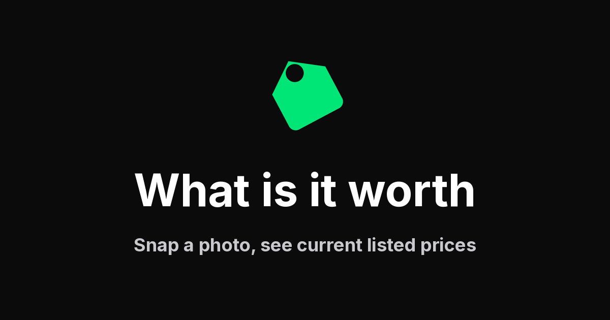

What is it worth? It is the same practical question as "how much is it worth". You have an object in front of you, and you want a current selling picture for that specific item in that specific condition, not a headline you half remember or a confident guess with nothing behind it.
The useful answer is almost never one number that belongs to a name. It is a range, for this item, in this condition, in the market as it stands now. That is why the page I built for the question, what is it worth, starts with a photo. How Much Is It Worth: Scanner does the same thing on iPhone, and there is one free scan on the website with no download.
People use the word in at least four ways. Mixing them up is the fastest route to a misleading answer.
Face value or replacement cost. A circulating coin still spends at face value. A mint stamp can still post a letter. That floor is real, but it is not the collector or resale figure.
Metal value. Older silver coins, gold bars, and precious-metal jewellery have a melt floor that moves with the published spot price. It is a floor, not a ceiling. A scarce date in sharp condition can be worth well above melt, and a jeweller's scrap payout is not the same as a branded bar.
Listed or asking price. What you see on public marketplaces and in shops right now. Useful, because it shows the market, but asking prices can sit above what an item finally sells for.
Sold prices, appraisals, and dealer offers. Each is its own figure. A formal appraisal for insurance or an estate is a professional document. A shop offer can sit below retail because the shop has to resell. If someone quotes you a number, ask which of these it is.
Two objects that share a name can live in completely different markets. A first edition and a later print of the same card. A tagged collectible and a loose one. A silver-era coin and a later clad coin of the same design. Type the name alone and you will often land on a figure that belongs to a different version.
Condition does the same job. Wear, completeness, packaging, grading, and signs of cleaning or repair all move the price. A figure copied from a mint example will not describe a worn one.
So the practical sequence is: photograph the item, including the back, mark, date, or tag if it has one, confirm what it actually is, then look at current listings for that exact match.
Want to try it? Start your free 3-day trial in the iPhone app at https://apps.apple.com/app/id6832980231. You get one free scan on the website at https://howmuchisitworth.today/what-is-it-worth. On Android? Check https://howmuchisitworth.today/ for the Android release.
You can, but a chatbot answer can be out of date, it does not see the condition of your object, and it can sound sure when it is guessing. Identification first, then current listings you can open yourself, is a sturdier way to answer the question.
If you have a jar of coins or a box of cards, you do not need to scan everything. Start with the pieces that look oldest, tagged, graded, or unusual. Once you see what those come back at, you can usually tell whether the rest is everyday material.
It is an estimate from current public listings. It is not a certified appraisal, and it is not an offer to buy. For insurance, an estate, or a high-stakes decision, treat the scan as a first look and talk to a qualified specialist.
In the app, scans save to a history and collections, and you can draft a listing for eBay, Facebook Marketplace, or Gumtree from the scan when you are ready to sell.
The app is free to download. Start your free 3-day trial to scan in the app, or use one free scan on the website.
If you want to answer the question for the thing in front of you, start at https://howmuchisitworth.today/what-is-it-worth, or download the app and Start your free 3-day trial.
I also wrote a Google Docs walkthrough of the same photo method: How Much Is It Worth: Scanner.